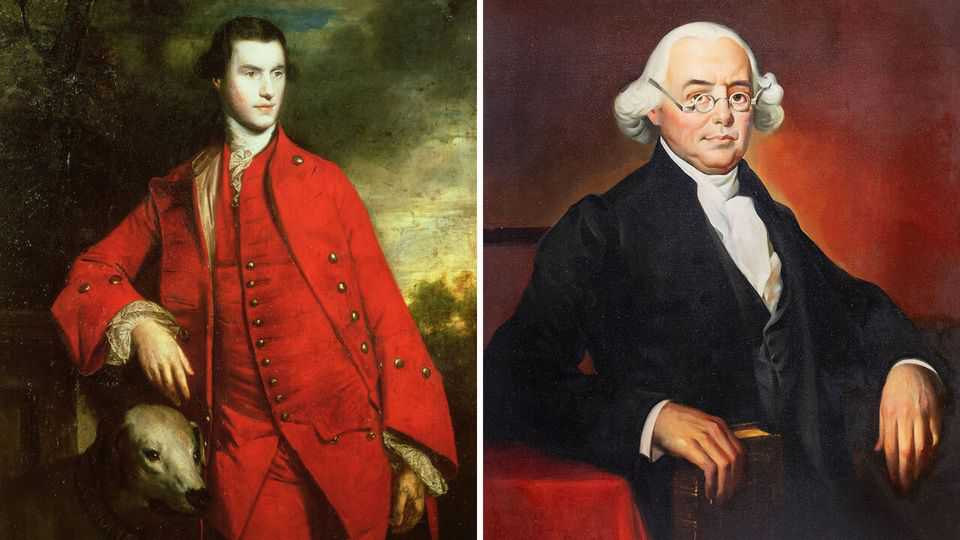

Two vital figures of the American revolution forgotten by history
Charles Lennox and James Wilson, a pair of Britons, played important roles in the struggle for independence

Aug 20th 2026
A STROLL THROUGH the gallery of America’s Founding Fathers yields familiar faces. Here is brave, disciplined George Washington alongside sociable, inventive Benjamin Franklin. There is John Adams—principled and prickly—squabbling with brilliant, curious Thomas Jefferson. Two new books seek to draw your gaze to two forgotten figures, each with strikingly expansive views of democracy.
The founders, as a whole, were inconsistent. They allowed slavery to endure. They wanted out from under Britain’s thumb, but not universal suffrage. Roger Sherman, the only person to sign all four of the founding documents, felt “the people…should have as little to do as may be about the government.” Benjamin Rush, another founder, called democracy “the devil’s own government”.
Charles Lennox (pictured left) and James Wilson (pictured right) disagreed. They shared a faith in democracy and popular wisdom uncommon at the time. Their lives were markedly different: Lennox was an aristocrat and parliamentarian, while Wilson was a poor Scot who emigrated to America and, on the strength of his intellect, became consequential.
The “tall, rich and beautiful” Lennox was an unlikely radical. Yet he was the first parliamentarian to propose letting all adult men vote in Britain and the first member of the House of Lords to suggest recognising American independence. He was also a patron of Thomas Paine, a tax collector in Sussex who became a vociferous proponent of independence after emigrating to America. Paine’s pamphlet, “Common Sense”, argued that Americans “have it in our power to begin the world over again”. Widely read, it galvanised support for revolution.
In “Radical Duke”, Danielle Allen, a political philosopher at Harvard, makes the novel argument that Lennox and Paine were at the centre of “a network of writers” that formed Junius, a pseudonymous author. Junius published essays critical of King George III’s government that roiled British politics in the early 1770s; they argued that royal “authority rested upon the consent of the governed”. Both men “cut their teeth as radicals by playing Junius” several years before the publication of “Common Sense”.
Lennox’s radicalism exemplifies Ms Allen’s shrewd broader argument that the roots of the American Revolution lay not in Boston but in Britain. Protests against unpopular and unjust taxation, popular demonstrations against royal authority, the publication of essays promoting revolution: all of these happened in Britain in the 1760s-70s. “Every act that provided the drumbeat of the march to revolution in the colonies had been foreshadowed in Britain,” she writes. That argument may provoke some grumbles: Americans consider their revolution home-grown. But few geopolitical events happen in isolation.
Ms Allen began researching Lennox’s life after she discovered a copy of the Declaration of Independence in a record office in Sussex. It had belonged to Lennox and was probably commissioned by James Wilson—the subject of Jesse Wegman’s biography. Wilson had emigrated to America in 1765, when he was 23, and was the only signer of both the constitution and the Declaration of Independence to serve as a Supreme Court justice.
Mr Wegman, a journalist, situates Wilson within the Scottish Enlightenment, which linked commerce with goodness—a comfortable pairing for mercantile America. (“The road to virtue and that to fortune,” wrote Adam Smith, “are, happily in most cases, one and the same.”) Scottish nobles had long defended self-government; in 1320 barons declared their king’s authority stemmed from “the due consent and assent of us all”.
In the run-up to the revolution, Wilson’s rigorous essays provided a legal argument for independence. Parliament had no authority over the American colonies, he stated, because colonists did not elect them. “All men are, by nature, equal and free,” so “no one has a right to any authority over another without his consent.”
Mr Wegman suggests that Jefferson paraphrased this sentiment in the Declaration of Independence. He notes that Wilson was the only founder to use the phrase “created equal” in later writing and that he coined the constitution’s opening phrase (“We the people”). In his battles for direct elections for Congress and the presidency, Wilson was “by a long shot the most democratic of all the founders”.
Why, then, is he not better known? First, because he was a creature of the law, not a politician. And second, alas, his roads to fortune and virtue diverged. Addicted to land speculation, he ended up in a debtors’ prison in New Jersey while a justice. Then, to escape his creditors, he fled to North Carolina, where he died of malaria in 1798.
Were Wilson and Lennox failures because their ideals did not carry the day? That is a crabbed view of reform. Battles for social progress are rarely won in fighters’ lifetimes. Martin Luther King did not live to see a racially equal society; he was not wrong to fight for one. In their efforts to expand the franchise and their faith in democracy, Lennox and Wilson were both ahead of their time—and their stories are a welcome rediscovery today. ■